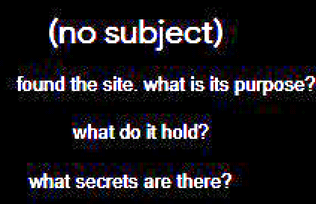

-
Greetings, this is Angus typing.
Truthfully, I don't get asked lots of questions, and most of the questions that are asked are really stupid ones...
-

...like so.
With that being said, I'm going to be simplifying this page. Maybe if I get more cool / real ones, I might add more information here. But until then, this is all I will offer up.
-
“What is the purpose of this website?”
Firstly, "angusnicneven.com" is my author website; I require such a thing to further my writing ambitions. Secondly, I'm just built different.
“That doesn’t really clear everything up though…”
That’s fine.
“What's the lore behind X, what's the meaning behind Y?”
Thankfully, a lot of these things can be answered by what I've created so far. So, even if I die soon, a lot can be cleared up by delving into my CONTENT.
...but you'll have to find the answers for yourself. I know, "reading?", "puzzles?", "exploration?", and in the current year???
I feel you. But, I had to BUILD it.
-
“What was your inspiration for the site?”
One day I happened to exist. Pretty strange.
(Also, buy my book(s). Share my shit. Tell everyone I smoked crack with aliens to make this WACKY site, or whatever you have to say to them to get them to check it out.)
Please, I've put so much time into this and I have little to show for it but a few schizos stalking me online now.
“Can you explain your inspirations more than that, please?”
No. Most people just don't "get it" anyway.
Truthfully? If you don't feel existential dread when you look up at the night sky, then you wouldn't get it either.
“Wait, did you say you have books?”
One right now, but maybe when you read this I'll have 2. Maybe not.
But the thing is, no one asked this question.
Yeah, that's right, I'm trying to get you to read MY book. Shameless, I know. But, I think the book is cool, and if you're unsure, check out the FREE chapters I have on THIS SITE, or there's a small portion for free on amazon itself...
-
“How did you make your images look so cool / How did you apply this/that effect to your images?”
I use a computer.
You might be able to get more answers out of me if you pay me money.
But I don't think many people actually care about how to make this shit, (mostly, anyhow), and they just want to find "THE END."
(No one asked, but there's over 3,000 images on the site as of now.)
-
“What’s the password for the login?”
Well, well, well...
...you must not be in the know.